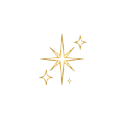
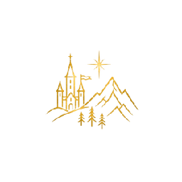
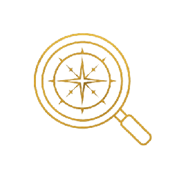
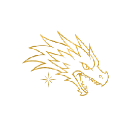
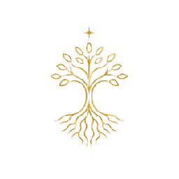
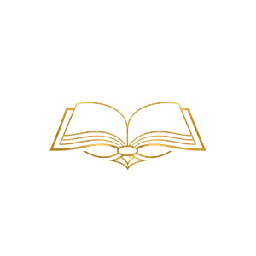
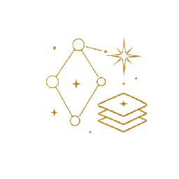
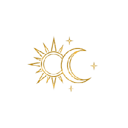

Socio fundador y administrador
Constitución de la sociedad, cumplimiento formal y tributario, planificación financiera y decisiones estratégicas.

ARCADE
Kevin del Río Nv. 1Ingeniero en Informática · Studios Conari SpA
Business Intelligence · Power BI · Tableau▌
Socio fundador, administrador y Lead Programmer de Studios Conari SpA. Especialista en análisis de datos y Business Intelligence, con más de tres años liderando áreas de Tecnologías de la Información. Diseño modelos de datos, procesos ETL y tableros de gestión, y construyo videojuegos en Godot Engine.
Modo arcade
Recorre este portafolio como un videojuego: cinco misiones, una arena de combate que genera datos para analizarlos, un memorize con los juegos del estudio, ritmo, un árbol de habilidades y la hoja de personaje.

Castillo ConariRecupera el emblema del estudio
Torre del DatoCombate, datos y análisis
Arcade del DragónMemorize y Ritmo Resonancia
GremioSube el árbol de habilidades
BibliotecaHoja de personajeZona 1 · Castillo Conari
Donde nacen mundos y leyendas eternas
Estudio creativo chileno de desarrollo de software, videojuegos y contenidos digitales, con base en Concepción. Arte, narrativa, tecnología, investigación e identidad bajo una misma dirección creativa.
Constitución de la sociedad, cumplimiento formal y tributario, planificación financiera y decisiones estratégicas.

Arquitectura de software, estándares de desarrollo y pipeline de producción, coordinando el trabajo técnico y creativo del equipo.

Planificación de hitos y entregables, control de avance y postulación a fondos públicos para la industria creativa.
Zona 2 · Torre del Dato
Durante más de tres años implementé la plataforma de BI de una empresa manufacturera de alimentos. Como esos datos son confidenciales, reconstruí el trabajo con Magic Foods S.A., una empresa ficticia con clientes en las 16 regiones de Chile. Este tablero usa esos datos: filtra y analiza tú mismo.
Responde usando el tablero de arriba. Cada acierto suma experiencia.
Los 7 dashboards existen en Power BI y en Tableau con los mismos indicadores, filtros y disposición. Arrastra el divisor para compararlos.
Cada dashboard tiene su presentación ejecutiva: por qué se analiza, qué se busca controlar, qué cambió entre 2023 y 2024 y qué medidas tomar.


Zona 3 · Arcade del Dragón
Del aprendizaje técnico a la construcción de mundos propios. Dos prototipos formativos, un RPG personal y la primera IP original del estudio.

Personal · código abierto
Climb. Fight. Become legend. RPG de mazmorras top-down: una torre de 10 pisos con biomas propios, 10 jefes y una ciudad base con seis tiendas.


Studios Conari · IP original · en desarrollo
Aventura narrativa 3D para PC, en solitario o cooperativa para dos personas. Dos amigos recorren Chile como mochileros y descubren una realidad mitológica que vuelve a manifestarse en sus territorios.
La narrativa y los materiales de producción se mantienen privados durante el desarrollo.
Conocer el estudio
Studios Conari · prototipo formativo
Primera etapa de aprendizaje técnico del estudio: un RPG 2D top-down para dominar la arquitectura, las mecánicas y el flujo de producción de un videojuego.


Studios Conari · prototipo formativo
Juego de ritmo para uno o dos jugadores con biblioteca musical, análisis de audio, generación automática de charts, editor visual y experimentación en red local.


Dos minijuegos hechos para esta página, inspirados en mis proyectos. Se juegan aquí mismo.
Moverse: WASD · Atacar: J o Espacio · Sobrevive a dos oleadas y derrota al Rey Slime.
Pulsa DFJK cuando las notas lleguen a la línea dorada, o toca los carriles. Sube el volumen.
Zona 4 · Gremio
Toca cada habilidad para desbloquearla y ver en qué la he aplicado. 0 desbloqueadas
Zona 5 · Biblioteca
Studios Conari SpA · Videojuegos, software y contenidos digitales
Dirección técnica, gestión societaria y tributaria, planificación de hitos y postulación a fondos públicos de la industria creativa.
DailyFresh · Industria manufacturera de alimentos
Liderazgo del área TI e implementación de la plataforma de BI corporativa en Power BI y SAP BusinessObjects: finanzas, comercial, metas y comisiones, personas, inventario, producción, calidad y activos TI.
Inversiones Terabytes Ltda.
Proyectos de redes bajo la Ley de Ductos 20.808, fibra óptica y redes coaxiales, certificación de redes internas.
Mekano
Soporte de hardware y software de puntos de venta para retail e instalación de equipamiento en terreno.
Certificaciones de especialidad Duoc UC: Arquitectura de Software · Programación de Software · Calidad de Software · Análisis y Desarrollo de Modelos de Datos · Inteligencia de Negocios · Gestión de Proyectos Informáticos · Análisis y Planificación de Requerimientos Informáticos.
Zona 6 · Buzón
Disponible para proyectos de análisis de datos, Business Intelligence y desarrollo de videojuegos.